Guide both friends to their own marked homes. There is no planning time limit. Place instruction chips in the available slots, then press Enter to start both friends. You do not steer them during a run. Getting only one friend home is not a clear. A friend who has arrived home no longer blocks a route or supplies PAD weight.
While planning: use Left/Right to select a slot and Space to cycle its chip. Available chips depend on the stage. Enter starts the run; F5 toggles the overview, where the same placement controls work. Down clears all placed chips. Up sets the selected slot to a stored hint placement: avoid it if you want to solve unaided.
During a run: Enter pauses/resumes; Esc cancels and returns to planning. Placed chips remain, while boxes, floors, switches and both friends reset. Arrow keys move the view; F4 changes follow mode. The F5 overview continues running too; Enter pauses/resumes it and F5 returns to the normal view.
F1 help shows the current stage password; close it with F1 or Esc. Before quitting, note all eight letters in order. Use F2 to open password entry: Left/Right selects a position, Up/Down changes its letter, and Enter submits. A password restarts a stage; it does not save placed chips or a running situation.
CLEAR means both friends reached home. Press Enter to continue. NO WAY means the current run cannot proceed; press Enter to return to planning and retry. You can also cancel a mistaken run with Esc before NO WAY appears.
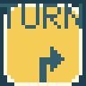
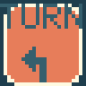
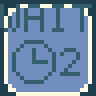
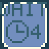
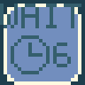
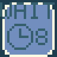
EMPTY: leave the slot empty and keep heading forward. This does not disable a built-in mechanism on the tile.
TURN RIGHT / TURN LEFT: turn 90 degrees relative to the incoming heading, not the screen. Both friends obey the same instruction, on every new arrival.
WAIT 2 / 4 / 6 / 8: wait for the indicated duration, then continue in the same direction. These are not seconds. A new visit causes another wait, unlike the single-use hourglass.
Boxes, PADs, gates, ALT and the other mechanisms below belong to the stage. They are not chips you select and place.
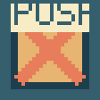
Both friends keep moving forward unless an instruction or mechanism changes their heading. They stop before a missing route, a closed gate or an occupied destination, and can resume when conditions change. They do not automatically turn at a dead end.
The cat pushes one box forward, but cannot pull it or push two boxes together. The destination must be suitable and free: gates and arbitrary mechanism tiles are not box storage. The rabbit cannot push boxes but can hop over one small HOP hole. Its landing must be connected, passable and free. Instructions on the skipped tile are not activated; landing instructions are.
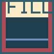
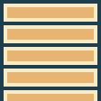
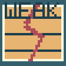
HOP is a small hole the rabbit can jump; the cat cannot simply walk across. FILL is a large hole that neither friend can cross unaided. Pushing a box into either hole makes a bridge usable by both. The box is consumed and cannot be recovered or reused as weight.
A fragile floor becomes a HOP hole when its occupant leaves, not immediately on arrival. The first visitor and later visitors therefore face different conditions.
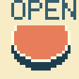
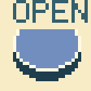
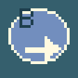
Stepping on red or blue OPEN unlocks gates of that colour. They stay open after you leave; another visit does not close them. Red and blue are independent and reset on retry. A combined mechanism bearing an arrow also redirects the arriving friend in the displayed direction.
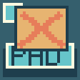
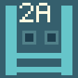
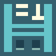
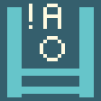
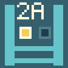
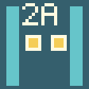
A PAD supplies one weight while occupied by a friend or a box. Count currently occupied PADs, not past visits. Leaving a box can maintain weight after a friend departs.
A regular pressure gate needs at least one weight. DUAL needs at least two. =1 needs exactly one and closes with two or more. An inverse, empty-PAD gate opens only when no PAD has weight.
Use gate indicators to check the requirement and current state. Once a friend has begun an allowed crossing, that crossing completes even if the weight changes. The gate remains visibly open through the crossing. This is not a timed opening.
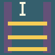
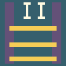
Every new arrival on SWAP toggles the shared ON/OFF state. ON gates pass you in ON; OFF gates pass you in OFF. Opening one kind therefore closes the other. This state is separate from red/blue OPEN gates.
ONE toggles that same state only on its first use. After that it is spent and neither friend can toggle it again. Multiple SWAP tiles do not own independent states. Retry restores the initial state and unused ONE tiles.
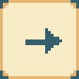
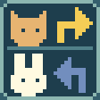
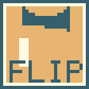
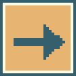
A fixed arrow sets the heading to its screen direction, unlike relative TURN instructions.
The species-dependent fork turns the cat right and the rabbit left, relative to each incoming heading.
Each new cat visit to FLIP toggles linked direction floors between east and south. A rabbit visit to FLIP does not toggle them. The direction floor uses its state when the friend arrives.
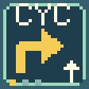
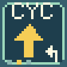
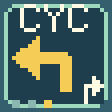
ALT alternates right, left, right… CYC cycles right, straight, left, right… Check the stage display for its initial state.
An arriving friend receives the current instruction, then the floor changes to show the next visitor’s instruction. Do not confuse the updated display with the instruction just given. Both friends share this state; revisits by the same friend advance it too. Standing still does not advance it again. Turns are relative to the incoming heading.
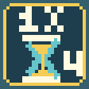
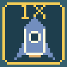
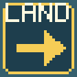
Hourglass: the first arriving friend waits for the equivalent of WAIT 4, and the tile becomes ordinary floor. Later visitors do not wait. A placed WAIT chip applies on every visit, so it is not equivalent.
Rocket: either friend can use it once to travel to LAND, arriving facing right. If the other friend occupies or is moving into the destination, departure waits until it is available. The spent rocket cannot transport another visitor. In Expert it is a mechanism, not just decoration. Retry restores both the hourglass and rocket.
Unexpected turn? Check the incoming heading and whether the tile was skipped by a hop. A gate closes? OPEN, PAD and ON/OFF gates follow different rules. A return visit behaves differently? Check ALT, CYC, ONE and fragile-floor history. Lost track of a friend? Open F5 and pause with Enter to inspect the whole map.
This guide is for the Expert development version. Do not assume identical mechanisms or controls in Normal. It does not certify physical-hardware testing. No stage solutions or password list are included.
When a TURN or WAIT chip covers a mechanism, a small picture and label at its lower edge show the underlying mechanism and its current state. This is not another placeable chip. The mechanism remains underneath.
The mark that may look like "0B" is a blue OPEN button picture followed by B (Blue), not the number zero. Its shape changes after it is pressed.
The mark that may look like "1ONE" is a circled 1 followed by ONE: an unused switch that toggles the shared ON/OFF state once. After use it shows a check mark and OFF. Here OFF means this ONE switch is spent, not that the shared state is OFF.
The PAD badge lights up while occupied and returns when the weight leaves. These small badges show the same states as the full-size mechanisms.